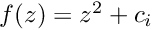
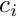
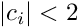
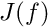
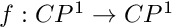
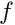

|
Лабораторна робота 2
Элементи хаотичної динаміки
|
за дисципліною "Элементи хаотичної динаміки"
студента групи ПА-17-2
Панасенка Єгора Сергійовича
Кафедра комп'ютерних технологій
ФПМ, ДНУ, 2020-2021 навч.р.
Варіант 17
Звіт доступний за посиланням
https://gaurapanasenko.github.io/unilab_opt/EoCD_Lab2/html/index.html.
Вихідний код доступний за посиланням
https://github.com/gaurapanasenko/unilab/tree/master/08/EoCD_Lab2
Написати алгоритм побудови заповнуючуої множини Жуліа для функцій , де  будь-яке комплексне число, яке задовільняє умові .
У голоморфній динаміці, множина Жуліа  раціонального відображення  — множина точок, динаміка в околиці яких у певному сенсі нестійка відносно малих збурень початкового положення. У випадку, якщо  — поліном, розглядають також заповнену множину Жуліа — множину точок, що не прямують до нескінченності. Звичайна множина Жуліа при цьому є її межею.
Програма дозволяє в інтерактивному режимі генерувати картинку на основі заповнуючуої множини жуліа. На при запуску програми отримаємо таке вікно.
Тут генерується зображення 200x200 пікселів. Тепер збільшимо якість зображення до 500x500 пікселів.
Тепер спробуємо задати деякі початкові значення z, наприклад z=0.68, z=-0.04-1.1, z=-0.14-0.34.
Також можна побачити відео демонстрацію програми перейшовши за посиланням:
https://youtu.be/LXtTFXJbMHg
Або можна побачити відео перейшовши на HTML версію звіту.